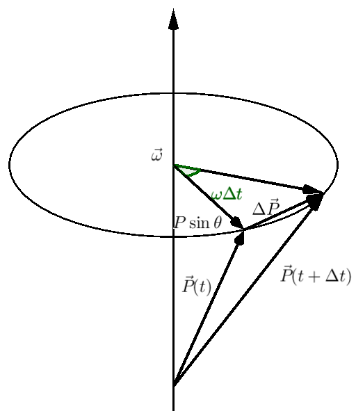
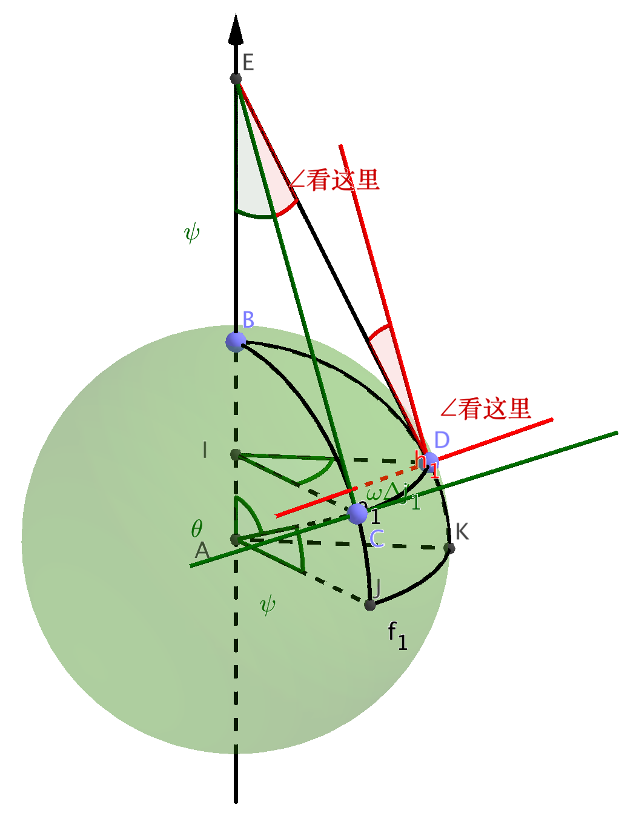
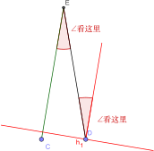

简介
苯渣在补力学时卡在了科氏力这一节，经过 Mr. Ren , 物吧大佬以及 Wikipedia 上的详细解释，我总算稍稍弄懂了这个家伙到底是怎么产生的了，于是写下本文分享一下愚见。
引子
坐过旋转木马的同学应该会有这样的体验：当坐在绕轴旋转的座位上向轴扔一个纸团（乱扔垃圾什么的最讨厌啦）时，纸团并不会砸到轴上，似乎纸团总是会偏离半径方向，并且总是偏向一个方向，这是为什么呢？这就要涉及到这篇文章要讲到的主角——科里奥利力。
什么是科里奥利力？
引用 Wikipedia 上的描述就是：
科里奥利力（简称：科氏力）是对旋转体系中进行直线运动的质点由于惯性相对于旋转体系产生的直线运动的偏移的一种描述。此现象由法国著名数学家兼物理学家古斯塔夫・科里奥利发现，因而得名；同时由于这种力在地球自转下产生，因此又称为“地转偏向力”。
个人理解：
以一个旋转体系为参考系时，若研究对象相对于参考系的有非轴向运动的分量（或在垂直轴的平面内有运动分量）时，这个方向的运动分量会受到一个法向惯性力的作用而偏离原来的运动，这个力就是科里奥利力。
上面的描述有两个要点：
- 参考体系为旋转体系，这也就意味着该参考系是一个非惯性系，其中必然要考虑惯性力的作用；
- 研究对象相对于参考系有相对运动，并且这个运动在垂直轴向的平面内有分量。
科里奥利力如何产生？
粗略的理解
就拿引子里旋转木马的例子：
假设旋转木马是做匀速圆周运动，角速度为 $ \vec{\omega} $ ，读者轨迹半径为 $\vec{r}$ ，那么读者的公转线速度为
$$
\vec{v}_t = \vec{\omega} \times \vec{r} \notag
$$
如同这样：

（注意这里的变量用矢量表示）
朝径向，也就是 $-\vec{r}$ 方向扔一个纸团时，这个纸团既有朝向径向的速度 $\vec{v}_n$ ，又有线速度 $\vec{\omega}\times\vec{r}$ ，当其运动到圆内侧时，内侧的线速度
$$
\vec{v}’_t = \vec{\omega}\times\vec{r}’ < \vec{\omega}\times\vec{r} = \vec{v}_t
$$
很自然地，纸团此时的切向速度比其所在圆上的的线速度更大，也就偏移了所谓的“直线”，读者视角俯视图见下图：

从这里也可以看出，所谓的“力”事实上并不存在，纸团的偏转完全是纸团的切向速度大于圆周运动线速度而偏离原来的位置，平面内没有任何力的作用使其真正偏转——假如纸团不受空气阻力，在观众看来，纸团应该做抛体运动，自然其轨迹的俯视图为一条直线，但是当我们置身于旋转木马中时，它的确看起来有一个“力”使其“偏转”，这又如何解释呢？
问题出在我们置身于旋转木马中。
更严格的推导
继承上面的假设，旋转木马做匀速圆周运动，其可以看成一个非惯性系，在这个参考系中，牛顿第一定律并不成立，为了使牛顿第一定律看起来成立，我们引入了惯性力。
现在，让我们做回观众：

显然有
$$
\vec{R}=\vec{r}_\perp = \vec{r} - \vec{r}_\parallel = \vec{r} - \frac{(\vec{r}\cdot\vec{\omega}) \cdot \vec{\omega}}{ {\omega}^2}
$$
将其简单变形
$$
{\omega}^2 \vec{R} = {\omega}^2 \vec{r} -(\vec{r}\cdot\vec{\omega}) \cdot \vec{\omega} = -\vec{\omega}\times(\vec{\omega}\times\vec{r})
$$
此时的 ${\omega}^2 \vec{R}$ 就是我们熟知的惯性离心加速度，方向与 $\vec{R}$ 一致，它也是惯性加速度的一种，但不是我们今天要研究的主角。
取一小段时间 $\Delta t$ ：

矢量 $\vec{P}$ 的增量为
$$
\Delta P \approx P\sin\theta\omega\Delta t=|\vec{\omega}\times \vec{P}|\Delta t
$$
$\Delta \vec{P}$方向与 $\vec{\omega}$ 和 $\vec{P}$ 的方向都垂直，即为 $\vec{\omega}\times\vec{P}$ 的方向，因此上式可以写为
$$
\Delta \vec{P} \approx\vec{\omega}\times \vec{P}\Delta t
$$
故 $\vec{P}$ 的变化率可以表示为其对时间的导数
$$
\frac{\mathrm{D}\vec{P}}{\mathrm{D}t} = \lim_{\Delta t\rightarrow0} \frac{\Delta\vec{P}}{\Delta t} = \vec{\omega} \times \vec{P}
$$
上式中大写的 $\mathrm D$ 表示以静止系统为参考系时各变量的微分，而小写的 $\mathrm d$ 则表示以旋转系统为参考系时变量的微分。上面式子中我们假定 $\vec{P}$ 在旋转体系中都是恒矢量，否则 $\vec{P}$ 的导数应该表示为
$$
\frac{\mathrm{D}\vec{P}}{\mathrm{D}t} = \lim_{\Delta t\rightarrow0} \frac{\Delta\vec{P}}{\Delta t} = \vec{\omega} \times \vec{P} + \frac{\mathrm d \vec{P}}{\mathrm d t}
$$
上式适用于任何矢量 $\vec{P}$ ，我们取一个质点的位矢 $\vec{r} = \vec{P}$ ，于是有
$$
\frac{\mathrm D \vec{r}}{\mathrm D t} = \vec{\omega}\times \vec{r} + \frac{\mathrm d\vec{r}}{\mathrm d t} = \vec{\omega}\times \vec{r} + \vec{v}
$$
其中的 $\vec{v}$ 表示质点相对于旋转体系的速度矢量。对上式再次求导，即得到加速度
$$\begin{aligned}
\vec{A} = \frac{\mathrm D^2 \vec{r}}{\mathrm D t^2} &= \vec{\omega}\times\frac{\mathrm D\vec{r}}{\mathrm D t} + \frac{\mathrm d \vec{v}}{\mathrm dt} \\
&= \vec{\omega}\times(\vec{\omega}\times \vec{r} + \vec{v}) + (\vec{\omega}\times\vec{v} + \frac{\mathrm d\vec{v}}{\mathrm d t}) \\
&= \vec{\omega}\times(\vec{\omega}\times \vec{r} ) + 2\vec{\omega}\times\vec{v} + \vec{a}
\end{aligned}$$
因此
$$
\vec{a} =\vec{A} - \vec{\omega}\times(\vec{\omega}\times\vec{r}) - 2\vec{\omega}\times\vec{v}
$$
上式中 $\vec{a}$ 表示质点相对于旋转体系的加速度，$\vec{A}$ 是由真实的力提供的加速度，后面两项都是“假想”存在的加速度，即惯性加速度。其中 $-\vec{\omega}\times(\vec{\omega}\times\vec{r})$ 是我们已知的惯性离心加速度，另一项 $-2\vec{\omega}\times\vec{r}$ 就是科里奥利加速度，我们用 $\vec{a}_c$ 表示，有了科里奥利加速度，就得到科里奥利力 $\vec{f}_c = m\vec{a}_c$ 。
根据右手定则，可以判断出其始终垂直于质点相对于旋转体系的速度，因此，质点相对于旋转体系运动时出现偏转也就很自然了。
实际应用
既然知道了科里奥利力是如何产生，那么知道这个东西对我们有什么用处呢？（可以拿来装X）
可以拿来侧纬度啦~
我们所置身的地球就是一个旋转体系，只是它旋转得太慢了，平时难以察觉到科里奥利力的存在，但是有一种东西可以反映出科里奥利力的存在，那就是傅科摆 ，如果你有足够的耐心观察它足够长的时间并确定它进动周期，你就可以很容易算出你所在位置的纬度，后面我们会给上推导这个公式的过程。
为了理解如何通过傅科摆的进动角速度确定纬度，我们先来看一个简单的例子：

一个可以旋转的圆盘上有一个单摆，当缓慢旋转圆盘时，我们假设惯性离心力很小，只有科里奥利力作用于单摆运动的切向。 当我们旋转圆盘 $90^\circ$ 时，在静止体系观看单摆的摆平面没有任何变化，只是单纯的平移而已，没有任何转动，但是当以圆盘为参考系时（坐在 $C’$ 的位置向 $A$ 看），单摆的摆平面已经旋转了 $90^\circ$ ，因此以圆盘的视角来观察这个现象时单摆进动的角速度就是圆盘转动的角速度。
下面的动画应该很形象了：

现在，我们让将摆线放大到67m长；将圆盘换成南极点的地面（相信这么做一定会有一群好奇的企鹅来围观）；讲缓慢转动圆盘换成地球大大的缓慢自转，这个上面的结论依然成立（当然如果你有上帝视角来看极点上的单摆进动，会更容易明白，就像看懂上面小圆盘上的单摆一样）。
接下来，让我们把情况更加一般化，将这个巨大的单摆放到地球的任何可行的位置，问题变成了旋转球面上直线运动的进动问题，话不多说，看图：

假设有一单摆在 $C$ 点（三个蓝点中最下面的那个），且在 $C$ 点建立一个坐标系（为了不使图更乱，我就不画了），平面 $CAE$ （说得装X一些叫“C点所在子午面”）如下：

其中 $A$ 是球心， $AC$ 是半径， $CE \perp CA$ 并且 $E$ 落在自转轴上，$\angle \psi$ 表示纬度，$\angle \theta$ 则是 $\angle \psi$ 的余角。
我们取一小段时间 $\Delta t$ ，由于地球的自转，单摆从 $C$ 点运动到 $D$ 点，那么 $D$ 点出坐标系的 $y’$ 轴与 $C$ 点处 $y$ 轴所成夹角即为坐标系偏转的角度 $\angle \text{看这里}$ （如下图），这个角度也就是在 $\Delta t$ 时间内单摆进动的角度，现在只要求出 $\angle \text{看这里}$ 与 $\omega \Delta t$ 之间的关系即可求出单摆进动角速度与地球自转角速度的关系。

下面来求这个关系：
$$\begin{aligned}
\angle \text{看这里} = \angle CED &= \frac {\widehat{CD}}{CE} \\
& = \frac{ CE \times \sin\psi \times \omega\Delta t }{ CE } \\
& = \omega\Delta t \sin\psi
\end{aligned}$$
于是，单摆进动的角速度为
$$\begin{aligned}
\varOmega & = \lim_{\Delta t \rightarrow 0} \frac{\angle \text{看这里}} {\Delta t} \\
& = \omega \sin \psi
\end{aligned}$$
上面式子表明，当 $\psi = \pm 90 ^ \circ$ 时，$\varOmega = \omega$ ，即当单摆处于极点时，其进动角速度等于地球自转角速度，也就是我们开始时提到单摆在圆盘时的情形。
好了，现在回到傅科摆，只要我们观察足够长的时间，测量出其轨迹的进动角速度，又已知地球自转角速度，便可以轻松算出傅科摆所在的纬度。
结语
这是我在补《力学》时卡住的一个知识点，之前心中总把科里奥利力想象成惯性离心力那样，导致看到傅科摆时完全不知道如何理解，经过请教群友，老师以及动手画图实验，总算稍稍理解了，上面便是本渣的一点愚见，如有疏漏，还请在评论区指出，或邮件联系（联系方式见关于页面）。
以上